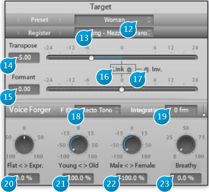

Target
For spoken voice it is good practice to playback between 5 to 15 seconds of any new audio material with Learn engaged to let the plug-in adapt to the specifics of the audio material. For singing voice or instrument sounds it is essential that the audio segment that is used covers the complete pitch range that will be processed. Otherwise the internal parameter settings will not achieve optimum quality for the transformation.
!> Do not forget to switch off learn mode when doing the actual processing, or you may encounter strange behavior!
Now that you have set the source parameters, here comes the fun part: transforming the source material, according to target parameters. T.R.A.X. allows for a large palette of transformations such as: * Pristine quality up and down pitch-shifting, preserving formant and transient integrity * Re-tuning the material to a fixed-pitch, a given musical scale, etc. * Altering perceived gender, age, etc. * Special effects for sound design and such

In all of these contexts, unwanted artifacts are kept to a minimum and the natural quality and timbre of voices and instruments are preserved, thanks to the innovative analysis algorithms used.
Please note, however, that in the case of extreme transformations, the perceived quality of the voice might degrade. We strongly believe this not due to a flaw or a limitation of the algorithms, but more to the fact that the human brain is extremely well trained and sensitive to the perception of voice, with all its intricacies. In other a words, please do not reasonably expect a computer to turn an amateur singer into a seasoned Opera pro or your 5-year old son into the 8 o’clock veteran news presenter. This would involve something much more complex than pitch and formant modification, such as prosody, and some understanding of the meaning of the underlying words or musical emotion conveyed.
(12) Target Preset
Only available in Voice Mode, the Target Presets cover a selection of gender and age combinations. Available presets
- Man
- Woman
- Young Man
- Young Woman
- Boy
- Girl
(13) Target Register
Available in Voice and Instrument Mode, the Target Register presets allow to change the register of the material. Ensure source and target registers match if you want to preserve register.
Register is locked to spoken voice when the source is defined as a spoken voice also, as in this case there is no “melody” for the target voice to follow.
Registers available in Voice mode:
- Spoken Voice
- Singing Bass
- Singing Baritone
- Singing Tenor
- Singing Counter Tenor
- Singing Contralto
- Singing Mezzo Soprano
- Singing Soprano
Registers available in instrument mode:
- Undefined. Only choice available if “Undefined” is selected as Source register.
- Bass
- Baritone
- Tenor
- Counter Tenor
- Contralto
- Mezzo Soprano
- Soprano
(14) Transpose
Applies a global transposition, also known as pitch-shift to the incoming audio, expressed in semi–tones. This affects the pitched content only, preserving formant and transient content for the most natural result. An octave shift corresponds to a Transpose factor of 12 semitones.
(15) Formant
Applies a global frequency-shift of the formant content, independently of pitched and transient content.
(16) Link
When engaged, the Format shift factor is locked onto the transpose factor value, and only the Transpose slider can be moved.
(17) Inv.
When the inverse button is engaged, the Formant shift amount follows the Transpose factor, in inverse fashion, i.e. formants are shifted by an amount opposite of the pitch.
(18) Voice Forger Target F(0)
The VoiceForger sub-section is used for more sophisticating pitch and formant transformations.
Here the incoming source characteristics extracted by the detection stage are used as input to a series of modifiers. The first possible modifier, F(0), changes the fundamental frequency of incoming notes, “squeezing” them back into a series of reference target intervals, defined by the modes which we explain below, with the Flat<–>Expr. controlling the “tightness” of this “squeeze”.
This can be used to correct a less than perfect take, impart a robotic character to a voice, make an instrument sound like a synthesizer, etc.
Recto Tono
Modifies the pitch with regard to the reference mean F0 as defined in the Source parameters, by an amount specified by the Flat<>Expr (FE) control. With FE set to -100% (Flat), no pitch variation remains in the processed sound, which gives a completely monotonous voice, reminiscent of early voice synthesizers.Recto Tono (Tuned)
Same as above, but taking into account the source tuning.Chromatic
Brings back the pitch of the notes towards a chromatic, equal-temperament scale.Mode 1 tr 1 (tone)
Attracts pitch towards the closest note on a succession of full-tone (2 half-tones) intervals.Mode 1 tr 2 (tone)
Same as above, transposed 1 semitone above root key.Mode 2 tr 1 (tone, semi tone)
Works on a succession of intervals made up of groups of a full-tone followed by a semi-tone.Mode 2 tr 2 (tone, semi tone)
Same as above, first interval is a semi-tone.Mode 2 tr 3 (tone, semi tone)
Same as above, first interval is a tone.
(19) Integration
This controls smoothing of the time-variations of the fundamental frequency. Increasing it will therefore give more progressive note-to-note transitions, for a more “legato” playing type of feel.
(20) Flat <–> Expr. (Voice and Instrument Mode only)
The Flat <–> Expression knob defines the amount of pitch correction taking place. When set to “Flat” (-100%), this controls how close towards the target reference notes (single note for Recto Tono, chromatic scale, etc.) the fundamental frequency is pulled. Conversely, when set to “Expr.”, it exaggerates the pitch differences with respect from the target reference notes. As you expect, a 0% expression setting leaves the pitch unaffected by this section.
(21) Young <–> Old (Voice Mode only)
This high-level control gradually alters the perceived age of a voice, either sung or spoken.
(22) Male <–> Female (Voice Mode only)
This high-level control gradually alters the perceived gender of a voice, either sung or spoken.
(23) Breathy (Voice and Instrument Mode only)
Increase the “breathiness” of a voice, or an instrument, making it whisper.
Increasing this close to 100% will give you that chain-smoker voice timbre, ala Don Corleone in the Godfather, without the risks and costs involved. You can also use this with a wind instrument to accentuate the breathing sound which gives so much character to a performance.
This panel acts as a mini-mixing console where the various components of the audio are sent to and summed-back to the output. It allows for further tweaking of the final result and isolation of each part of the sound, and one can also use this to achieve special effects.